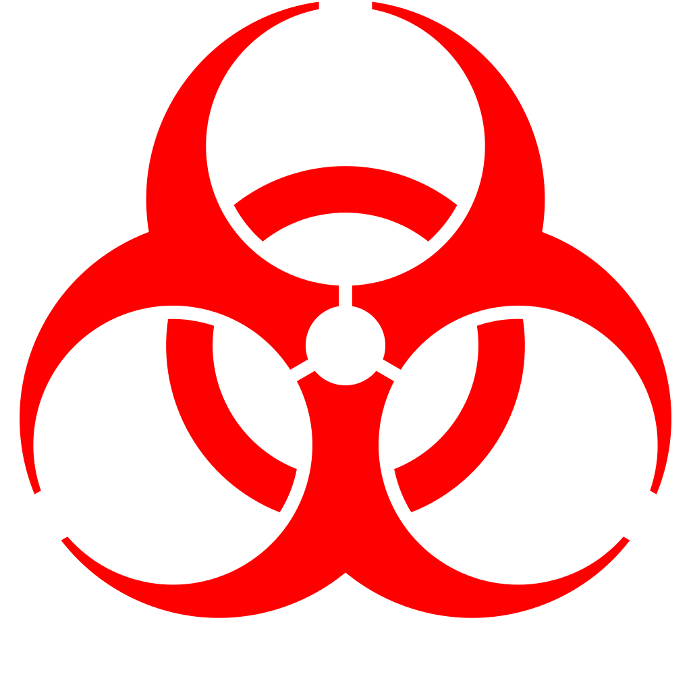

Biological Safety
Introduction
Biological hazards, also known as biohazards, typically refer to biologically derived materials that pose a threat to the health of humans, animals, or the environment.
Categories of biohazards include:
- Human, animal, and plant pathogens: bacteria, fungi, viruses, and parasites toxins
- Human and animal blood, blood products, tissues, and body fluids
- Cultured cells and potentially infectious agents within them
- Allergens
- Recombinant DNA products
- Clinical, necropsy, and surgical specimens (e.g., tissues, fluids)
Such hazards have various routes of entry to the body, such as through the eyes, mouth, lungs, and open wounds.This can come about in a variety of ways including:
- Aerosol generation (e.g., pipetting, vortexing, centrifuging, etc.)
- Manipulation with sharps
- Spills and splashes into the mucous membranes
- Contact with blood or bodily fluids
- Handling animals (e.g., bites and scratches)
Some biohazards can reproduce and spread infection throughout the body and be transmitted to other people, in addition to causing allergic reactions or irritations. This makes their risk profile significantly different to chemical hazards.
Risk Groups
Risk Groups are a classification system for the hazard associated with an organism. The risk group will help determine what level of biological containment you will need in order to work safely with that organism. Depending on where your lab is located, these can either be called biosafety levels (BSLs) or containment levels (CLs). They typically have a number associated with them (i.e., BSL 1-4) with higher numbers indicating that more containment measures are required.
Risk Group Definitions
Risk Group definitions are largely similar but vary slightly by country or organization. See this table for a list of the various definitions.
Risk Group 1: A microorganism, nucleic acid, or protein that is either (a) incapable of causing human or animal disease; or (b) capable of causing human or animal disease, but unlikely to do so. Risk Group 1 pathogens are capable of causing disease are considered pathogens that pose a low risk to the health of individuals or animals and a low risk to public health or animal population. They can be opportunistic and may pose a threat to immunocompromised individuals. (e.g., lab strains of E.coli, bakers yeast).
Risk Group 2: A pathogen or toxin that poses a moderate risk to the health of individuals or animals and a low risk to public health and the animal population. These pathogens are able to cause serious disease in a human or animal but are unlikely to do so. Effective treatment and preventive measures are available and the risk of spread of diseases caused by these pathogens is low. (e.g., bacteria like Campylobacter [causes food poisoning] or parasites like Toxoplasma gondii [causes toxoplasmosis]).
Risk Group 3 : A pathogen that poses a high risk to the health of individuals or animals and a low risk to public health. These pathogens are likely to cause serious disease in a human or animal. Effective treatment and preventive measures are usually available and the risk of spread of disease caused by these pathogens is low for the public. The risk of spread to the animal population, however, can range from low to high depending on the pathogen (e.g., HIV, Hepatitis C, Bacillus anthracis [produces anthrax spores]).
Risk Group 4: A pathogen that poses a high risk to the health of individuals or animals and a high risk to public health. These pathogens are likely to cause serious disease in a human or animal, which can often lead to death. Effective treatment and preventive measures are not usually available and the risk of spread of disease caused by these pathogens is high for the public. The risk of spread of disease to the animal population, however, ranges from low to high, depending on the pathogen (e.g., Ebola virus, smallpox).
How to Determine the Risk Group for an Organism that Someone Wants to Bring into the Lab?
We strongly recommend that you do not allow any organism into your lab without knowing the official strain name or acquiring a high-quality, sequence-based identification (e.g., full-length 16S sequence for bacteria). Any educational suppliers should be able to tell you exactly which strains they are selling, even if this information might not be directly visible on their website.
Once you know the exact strain, how do you know if this strain is actually safe to use in your lab? Official national or international Risk Group Databases can be a good starting point. Here is an incomplete list of useful resources:
- Canada's Risk Group Database:
https://health.canada.ca/en/epathogen
- ABSA's Risk Group Database:
https://my.absa.org/Riskgroups
- Swiss Classifications of Organisms:
- Germany's Database of safety-assessed microorganisms:
https://zag.bvl.bund.de/organismen/index.jsf
Culture Collections
Official Risk Group Databases don't always cover the organisms you might be interested in or are not specific enough in distinguishing between different strains of a species. In many cases, it can be useful to look up an organism at one of the large Culture Collections as well. These are some of the largest culture collections in the world and contain recommended risk groups for tens of thousands of organisms:
- American Type Culture Collection (ATCC):
- DSMZ (Germany):
Note that the official names for many organisms are under revision as scientists are sequencing more genomes and updating the taxonomies accordingly. In some cases, you may need to look up an organism under a different genus or species name to find the required information. You can look up the history of all names changes in the NCBI taxonomy database:
https://www.ncbi.nlm.nih.gov/taxonomy
Biosafety Levels/Containment Levels
What Is a Biosafety or Containment Level?
Some biological organisms can cause harm to health or the environment. Biosafety or containment levels are sets of measures to prevent these organisms from being released and/or infecting people, animals, and plants. There are four levels of human disease-causing organisms (pathogens) that typically correspond to four levels of containment: BSL-1, -2, -3, and -4.
Very few community labs have the infrastructure for BSL-2 or could maintain the infrastructure and requirements necessary to comply with recommendations for a BSL-2 environment. We recommend that you thoroughly understand the legal and management infrastructure of running a BSL-2 lab before working with pathogens. We strongly recommend against working beyond BSL-2 in a community labs context.
| Country/Region | Levels | Set by | Link |
|---|---|---|---|
| United States | BSL 1-4 | Centers for Disease Control and Prevention (CDC) | Biosafety in Microbiological and Biomedical Laboratories |
| Canada | CL 1-4 | Public Health Agency of Canada (PHAC) and the Canadian Food Inspection Agency (CFIA) | Canada's Canadian Biosafety Standard (CBS), 2nd Edition, 2015 |
| European Union | CL 1-4 | European Union Directive | DIRECTIVE 2000/54/EC (OJ L 262, 17.10.2000, p.21) |
Do All Experiments Need to Take Place in a Containment Lab?
No! Some organisms do not pose a risk to health or the environment. There are plenty of experiments that are safe for kitchens, makerspaces, and more.
Some countries have stricter regulations than others. For example, in Europe any genetic modification experiment or genetically modified organisms must be in a containment laboratory, regardless of their level of risk to health and the environment.
Biosafety Level 1
BSL-1 is a set of containment measures that maintain a safe workspace for using well-characterized biological organisms that are:
- Not known to cause disease in adult humans with a healthy immune system
- Present minimal potential hazard to laboratory personnel
- Present minimal potential hazard to the environment
Requirements differ by country, but the main things to consider are listed below. This list also assumes that standard microbiological safety practices are followed.
Lab Facilities
- The lab should have doors for access control.
- The lab must have a sink for hand washing.
- The lab should be designed so that it can be easily cleaned. Carpets and rugs in labs are not appropriate.
- Lab furniture must be capable of supporting anticipated loads and uses. Spaces between benches, cabinets, and equipment should be accessible for cleaning.
- Bench tops must be impervious to water and resistant to heat, organic solvents, acids, alkalis, and other chemicals.
- Chairs used in laboratory work must be covered with a non-porous material that can be easily cleaned and decontaminated with an appropriate disinfectant.
- Laboratories windows that open to the exterior should be fitted with screens.
Safety and Personal Protective Equipment
- Special containment devices or equipment, such as biological safety cabinets, are not generally required.
- Wear protective laboratory coats, gowns, or uniforms to prevent contamination of personal clothing.
- Wear protective eyewear when conducting procedures that can splash microorganisms or hazardous materials.
- Glovesmust be worn to protect hands from exposure to hazardous materials. BSL-1 organisms themselves may not be considered hazardous materials, but gloves should be worn anyway as a protective measure. Glove selection should be based on an appropriate risk assessment. In addition, BSL-1 workers should:
- Change gloves when contaminated, glove integrity is compromised, or when otherwise necessary.
- Remove gloves and wash hands when work with hazardous materials has been completed and before leaving the laboratory.
- Do not wash or reuse disposable gloves. Dispose of used gloves with contaminated laboratory waste.
- Wash hands prior to leaving the laboratory.
Training and Supervision
- Lab members must have training in the procedures conducted in the lab. Ideally, they'd be supervised by a scientist with training in microbiology or a related science.
- The laboratory supervisor must ensure that laboratory members receive appropriate training regarding:
- their duties
- the necessary precautions to prevent exposures
-
exposure evaluation procedures.
-
Members must receive annual updates or additional training when procedural or policy changes occur.
- Personal health status may impact an individual's susceptibility to infection, ability to receive immunizations, or prophylactic interventions. Therefore, all lab members, particularly women of childbearing age, should be provided with information regarding immune competence and conditions that may predispose them to infection. Immunocompromised individuals should contact their healthcare provider for guidance.
Biosafety Level 2
Few community biology labs are pursuing experiments requiring BSL-2 space, but a few do exist. Work at BSL-2 involves organisms that pose moderate hazards to lab personnel, the wider community, and the environment. Containment measures are more stringent than BSL-1 to maintain a sterile work space, prevent contamination, avoid lab-acquired infections, and potential environmental releases.
Beyond measures recommended for a BSL-1 facility, additional measures should be taken in a BSL-2 lab:
- Clear identification must be made for spaces dedicated to BSL-2.
- Access to the BSL-2 area must be restricted when work is being conducted.
- Lab members must be trained in handling pathogenic agents. Ideally, they should be supervised by scientists competent in handling infectious agents.
- All procedures in which infectious aerosols or splashes may be created are conducted in a biosafety cabinet or other physical containment equipment.
- If warranted by risk assessment, members should be encouraged to go get checked out by their personal physician, inform their physician what they are working with, and get regular medical checkups thereafter.
- There may be more regional regulations beyond those listed above.
Laboratory Facilities
- Lab doors should be self-closing and have locks.
- Windows that open to the exterior are not recommended. However, if a laboratory does have windows that open to the exterior, they must be fitted with screens.
- Biological safety cabinets (BSCs) must be installed so that fluctuations of the room air supply and exhaust do not interfere with proper operations. BSCs should be located away from doors, windows that can be opened, heavily traveled laboratory areas, and other possible airflow disruptions.
- Vacuum lines should be protected with liquid disinfectant traps.
- An eyewash station must be readily available.
- There are no specific requirements for ventilation systems. However, planning of new facilities should consider mechanical ventilation systems that provide an inward flow of air without recirculation to spaces outside of the laboratory.
- HEPA filtered exhaust air from a Class II BSC can be safely recirculated back into the laboratory environment if the cabinet is tested and certified at least annually and operated according to manufacturer's recommendations. BSCs can also be connected to the laboratory exhaust system by either a thimble (canopy) connection or directly exhausted to the outside through a hard connection. Provisions to assure proper safety cabinet performance and air system operation must be verified.
- A method for decontaminating all laboratory wastes should be available in the facility (e.g., autoclave, chemical disinfection, incineration, or other validated decontamination method).
Safety and Personal Protective Equipment
- Properly maintained BSCs, other appropriate personal protective equipment, or other physical containment devices must be used whenever:
- Procedures with a potential for creating infectious aerosols or splashes are conducted. These may include pipetting, centrifuging, grinding, blending, shaking, mixing, sonicating, opening containers of infectious materials, inoculating animals intranasally, and harvesting infected tissues from animals or eggs
- High concentrations or large volumes of infectious agents are used. Such materials may be centrifuged in the open laboratory using sealed rotor heads or centrifuge safety cups.
- Protective laboratory coats, gowns, smocks, or uniforms designated for laboratory use must be worn while working with hazardous materials. Remove protective clothing before leaving for non-laboratory areas, e.g., cafeteria, library, and administrative offices. Dispose of protective clothing appropriately, or deposit it for laundering by the institution. It is recommended that laboratory clothing not be taken home.
- Eye and face protection (goggles, mask, face shield, or other splatter guard) is used for anticipated splashes or sprays of infectious or other hazardous materials when the microorganisms must be handled outside the BSC or containment device. Eye and face protection must be disposed of with other contaminated laboratory waste or decontaminated before reuse.
- Eye, face, and respiratory protection should be used in rooms containing infected animals as determined by the risk assessment.
Other Resources
The American Society for Microbiology's (ASM) Task Committee on Laboratory Biosafety developed Guidelines for Biosafety in Teaching Laboratories, with a simple guide to handling BSL-1 and BSL-2 organisms that would be appropriate for most community labs. They also explain their reasoning and how their decisions differ from some existing practices.
The CDC's Biosafety in Microbiological and Biomedical Laboratories (BMBL) contains a comprehensive guide about lab practice at the varying biosafety levels.
| Biological Safety—Personal Protective Equipment (PPE) Recommendations* |
|---|
| BSL-1 |
| Protective laboratory coats, gowns, or uniforms recommended preventing contamination of personal clothing. |
Protective eyewear worn when conducting procedures that have the potential to create splashes of microorganisms or other hazardous materials.
Personnel who wear contact lenses in laboratories should also wear eye protection.
Gloves must be worn to protect hands from exposure to hazardous materials. | Protective laboratory coats, gowns, smocks, or uniforms must be worn while working with hazardous materials.
Eye and face protection (goggles, mask, face shield, or other splatter guard) must be used for anticipated splashes or sprays of infectious or other hazardous materials when the microorganisms are handled outside the Biological Safety Cabinet (BSC) or physical containment device.
Personnel who wear contact lenses in laboratories should also wear eye protection.
Gloves must be worn to protect hands from exposure to hazardous materials.
Eye, face, and respiratory protection should be used in rooms containing infected animals. | Protective laboratory clothing with a solid-front , such as tie-back or wrap-around gowns, scrub suits, or coveralls must be worn.
Eye and face protection (goggles, mask, face shield, or other splash guard) must be used for anticipated splashes or sprays of infectious or other hazardous materials. (All procedures involving the manipulation of infectious materials must be conducted within a BSC, or other physical containment devices.)
Personnel who wear contact lenses in laboratories must also wear eye protection.
Gloves must be worn to protect hands from exposure to hazardous materials.
Eye, face, and respiratory protection must be used in rooms containing infected animals. | Not permitted in DIY facilities.
Please refer to the CDC/NIH document "Biosafety in Microbiological and Biomedical Laboratories" for PPE requirements. |
*Safety is improved when PPE is used in combination with physical containment devices or equipment, such as Biological Safety Cabinets (BSCs).
Biohazard Symbol and Use Thereof
The CDC's BMBL recommends that the universal biohazard symbol be posted at the entrance labs containing infectious agents. This is recommended for BSL-2 level work, but is not absolutely required for a BSL-1 lab. The lab's biosafety level must be posted.

Universal Biohazard Symbol
Biosafety for Human-derived Materials
Human-derived materials are critical to diagnostics and for real representation of disease. A risk assessment and often an ethical review is necessary for the types and conditions for use of these materials. These materials are often rated at a minimum of BSL-2. They are often sought for a unique disease state or background. However, they could contain unknown endogenous or co-infections and can harbor infectious agents. For example, while urine may be considered BSL-1 in a healthy adult, it has been known to pass diseases such as Croydon Typhoid or Tuberculosis. Blood and blood products are another case that is often considered BSL-1 from a blood bank because of the rigorous testing done on the sample. However, some viruses do not have definitive tests. It is also important to consider the source and testing done at the stock center for common diseases during the risk assessment. In this context, a self-derived sample may not be acceptable practice.
Samples have been taken from the following sources:
- Saliva or buccal samples
- Urine or feces
- Blood or blood products such as red or white blood cells plasma
- Human cell lines
- Organs
- Tissues
- Cerebrospinal fluid
- Tears
- Eyeball fluid
Human and Animal Cell Lines
Cell lines are living cells that were isolated from animals or humans and grown in culture. Cells cultured directly from an organism, called primary cells, typically have a very limited life span. However, most cell lines have been immortalized; they have been mutated through chemical means, through the use of a mutagenic virus, or during the course of a naturally occuring cancer (as is the case with the infamous HeLa cells) to escape the lifespan limitations that most healthy cells have.
Cell lines may carry diseases that were present in the original donor organism. In addition, cell lines lack an immune system and can be infected with whatever the researcher carries and can then spread those infections to others in the lab. The greater the species barrier, the less chance of infections being transmitted between the cell lines and the researchers and vice versa. So working with mollusc, insect, fish, reptile, or amphibian cell lines can be relatively safe. These can still host zoonotic viral diseases like bird flu, or the rich media can become contaminated with bacteria like Salmonella. Working with mammalian (mouse, rat, pig), primate (monkey, ape), or human cell lines carries progressively more risk. Likewise, certain tissue or cell types carry greater risk than others. In descending order of risk (from ABSA "Principles & Practices of Biosafety" course):
- Hematopoietic cells and tissues (stem cells that give rise to blood cells, bone marrow, lymphoid tissue)
- Neural tissue (brain, spinal cord, cerebrospinal fluid [CSF])
- Endothelium and gut mucosa (organ lining, inner lining of intestines)
- Epithelial cells and fibroblasts (skin, outer layer of organs)
Nevertheless, there are a number of human cell lines that have been carefully screened for existing diseases or the presence of any mutagenic viruses that were used to immortalize the cells and that can be safe for use in a BSL-1 lab.
| Important note when ordering human cell lines from ATCC (and possibly other stock centers?):The biosafety levels assigned by ATCC for cell lines refer to shipping only ! Cell lines labeled BSL-1 have been screened for the presence of HIV, HepB, HPV, EBV, and CMV. However since cell lines cannot be tested for all viruses, ATCC recommends handling all cultures under BSL-2 conditions as a safety precaution. Each researcher should determine the appropriate BSL using a risk assessment based on the characteristics of the cell line and how the cell line will be used (see How does ATCC assign biosafety levels for cell lines?). |
|---|
Working with human cell lines is technically demanding because they are fragile and prone to contamination. Work often requires greater expertise and higher standards of lab cleanliness and sterility than when working with bacteria. For that reason, community labs that do allow work with BSL-1 human cell lines in the general lab often confine such work to a separate section of the lab dedicated to that purpose.
Human Samples
Using Your Own or "Autologous" Samples
Autologous samples are samples that are derived from oneself. Examples are swabs taken from cheek cells (buccal swab), nasal swabs, skin, or bodily fluids.These are of course free and readily available with permission. We recommend the following policies when letting members in your lab work with autologous samples:
- Samples should not be cultured. Culturing allows potential pathogens to expand their populations making it possible to create an infectious culture. (BSL-2 containment level is required for culturing of autologous samples, including microbiomes.)
- Immediately lyse the sample. Cell lysis kills most cellular pathogens, while leaving useful molecules like DNA intact.
- Don't trade samples or work with samples that are not your own. This prevents the possibility of infecting someone else with pathogens you may already have.
- Be especially rigorous about storage, cleanup, and waste disposal procedures. Even though autologous samples are generally safe for the experimenter, they carry significant risks of infecting others in the lab.
Microbiome
Microbiomes are an exciting and rapidly advancing field. The human microbiome has a wide variety of microbes, many of which can be pathogenic. Care should be taken when collecting and processing microbiome samples. Consider the possibility of culturing pathogens in your risk assessment. Projects including the gut microbiome or fecal material are considered BSL-2 and care should be taken before being approved in the lab.
Environmental Samples
In a BSL-1 lab, you are expected to know the exact organisms with which you are working. Because it's impossible to know which organisms you're collecting when taking environmental and microbiome samples, culturing these samples is generally not permitted under BSL-1 conditions. This is because you may unexpectedly exponentially amplify pathogenic strains that were in trace amounts in the source material. For more information and some potential exceptions, see Chapter 14 - Working with Microbes.
Many labs allow work with environmental samples as long as they are immediately inactivated by autoclaving, chemical, or enzymatic methods, or they are filter sterilized, e.g., to extract DNA for sequencing or for chemical analysis. Even under those conditions, labs should restrict samples that are known or are suspected to carry disease, such as sewage, animal or human remains, stool/blood samples, etc. Likewise, great care should be taken with samples that may contain heavy metal, chemical contamination or even radioactivity (e.g., collecting soil or sediment samples from polluted sites!).
Prior to collecting samples, you should investigate what occurred previously on those locations to determine potential risks with samples taken. As always, the safety committee should decide where to draw the line in dealing with potentially hazardous samples and what additional safeguards may be needed.
Food Projects
Standard microbiological practices forbid any food or drink in the laboratory. But what if you are doing research on food or developing a novel food in the lab? Examples of this include Real Vegan Cheese, Shojinmeat, cellular agriculture projects, isolating foodsafe cultures, or producing plant extracts using lab equipment. These can be great and innovative projects but require precautions in order to keep your lab and its members safe.
We recommend the following precautions:
Designate a separate lab area, equipment, and plasticware for food projects. Whenever possible you should maintain a strict separation between the laboratory and the outside world. For example, when Counter Culture Labs ordered a number of cheese ripening bacterial strains they purchased two packets of each—one for use inside the lab for culturing and experiments and the other for cheese making and taste testing outside the lab. While it is acceptable to bring a food sample into the lab for study, it should never be brought out again for consumption.
Bringing things out of the laboratory. If you are considering removing or consuming something that has been cultured or processed in the lab, we recommend the utmost care and forethought. We recommend that you perform a separate risk assessment (see How to do a risk assessment) and document guidelines for how to do this safely in your specific context.
These guidelines should establish the required level of evidence that the material requires to be taken out of the lab and practices for avoiding cross contamination. They should take into consideration whether to use a third party service to test for safety and contamination and procedures for documenting containers to use at each step of the process and how those containers should be cleaned.
Additional guidelines might include establishing a quarantine area where cultures can be passaged to determine if they are clean, DNA sequencing to determine purity, testing for protein purity, endo-toxin assays, exposure testing with human cell lines, etc.
Dealing with regulatory agencies. Formal approval of a novel food by regulatory agencies such as the U.S. Food and Drug Administration is required before commercializing a product. Typically, commercial products require further testing in a "GMP" lab specified by the FDA. The regulatory process can be lengthy and expensive and typically attempted once you have enough startup funding to pay for lawyers and consultants to guide you through the process.
It may be useful to contact the FDAor other regulators early in order to get their input on which aspects of the project to preempt problems down the road. For example, the Real Vegan Cheese project contacted the FDA for feedback on recombinant cheese proteins, which led the team to refocus their goal on creating recombinant cow cheese proteins rather than human proteins, which the FDA scrutinizes more deeply.
Drug Development Projects
Some projects in community labs are developing drugs that are intended for therapeutic use in humans (e.g., the Open Insulin Project). These projects bring into focus many of the issues discussed above for food projects but with additional considerations and risks.
Self-experimentation
There are few (if any) regulations in most countries preventing self-experimentation with legal substances and treatments, and there is also a long history of self-experimentation in science (see also Wikipedia). For example, in 2005 Barry Marsell famously infected himself with Heliobacter pylori to prove that it caused stomach ulcers, and he was eventually awarded the Nobel Prize. Other self-experiments haven't gone nearly as well. For example, in 1954, John Stapp, airforce officer and physician, was testing the effects of rapid acceleration and deceleration and caused several broken bones, concussions, and permanent vision loss during self-testing. Famously, in 1928 Alexander Bogdanov died when he gave himself a transfusion with an incompatible blood type.
Whether you allow self-experimentation in your lab requires a lengthy risk assessment. Some have extolled self-experimentation as an expression of personal body autonomy and even as a fundamental right protected by the UN Declaration of Human Rights. Others see it as a risk not worth taking, especially among biology novices. As an organization, you will need to account for the ethical considerations, safety risks, legal liabilities, risks to the lab and lab members, damage of reputation, and more, when making this decision. You should also consider whether your experiments may give false hope to patients or may inspire copycat experimenters to take far greater risks. Please note that many community labs forbid it.
Methods You Should Consider _ Before _ or _ Instead of _ Any Self-experimentation
- Bacterial, yeast, single-cell eukaryotic testing
- Computer modeling simulations of protein pathway networks
- Testing with cell-free systems (e.g., protein-protein interactions, detection systems)
- Trying things out on human cell lines and animals (e.g., on mice through a contract research organization).
Requests from Patients or Patient Advocates
Often community lab projects, labs, and lab members are contacted by desperate patients or patient advocates asking for help with a disease. These come in many different forms of solicitation; from general science questions to more aggressive requests for clinical testing, studies, or drug discovery—often in response to a scientific article or crackpot theory that has been in the news.
These solicitation situations can be difficult on many different levels. Please have the patience and empathy to navigate the emotionally difficult experience while avoiding giving medical advice. Take great care when approaching these projects because of the emotional difficulty, scientific complexity, and possible exposure to public relations and legal risk.
In the majority of cases, these individuals have run out of alternatives from the scientific and medical community and are desperate for help. The community lab may choose to decline with utmost compassion, redirect to professional resources, or ignore the request (examples below). If the community lab or members decide to aid these individuals, they should consider the NIH guidelines on human research and Health Insurance Portability and Accountability Act (HIPAA) privacy regulations.
Sample Message: Decline with Compassion
Dear (Patient advocate),
We are saddened to hear about your (patient). We understand your frustration and desire to help your (patient) affected by this affliction. Many of us are just like you and have had people close to us affected by diseases with no cure. Our institution is not in a position to aid because we lack the resources (money and infrastructure), skills, and knowledge to tackle this problem. We support and encourage you to get involved and become the champion for change. We appreciate your passion to find the solutions to these complex problems. Science is difficult, and it is going to take a lot of ideas and tests to discover the solution.
Sample Message: Redirect to Professional Resources
Dear (Patient advocate),
We are saddened to hear about your (patient). Our institution is not in a position to help. We lack the resources necessary to tackle a problem of this magnitude. We have, however, gathered some resources that might be helpful, and we encourage you to contact them for more information.
National Organization of Rare Diseases (NORD)
Global Genes List of rare disease support organizations
National Health Foundation listing of groups
US National Library of Medicine World Wide Clinical Trials
HHS listing of Clinical Trials
Genetically Engineered Organisms and Recombinant DNA/Synthetic Nucleic Acids
Genetically engineered organisms come with their own sets of concerns. These can change the function of an organism to become pathogenic or a health or environmental hazard. Before modifying an organism, perform a risk assessment. Here are some common terms when referring to genetically engineered organisms:
Genetically modified organism (GMO); Any organism whose genetic material has been altered using genetic engineering technologies.
Recombinant DNA technology : A set of tools that combine genetic material from different sources to create GMOs that may have never existed in nature before.
Recombinant nucleic acids: Molecules that have been constructed by joining nucleic acids (DNA) usually by combining DNA from different organisms that can replicate in a living cell.
Synthetic nucleic acids : ucleic acid molecules that are chemically (or by other means) synthesized or amplified, including those that are chemically or otherwise modified but can base pair with naturally occurring nucleic acid molecules.
General Concerns
Because GMOs are often novel creations, they can have unforeseen interactions with their environments and other organisms. The following may be concerns regarding their development and propagation:
General Scientific Considerations
- Function of the genetic insert: The function of genes inserted into an organism may affect the associated risks. For example, if you were to put a gene-related pathogenicity or toxicity into a nonpathogenic organism, you might consider it a BSL-2 organism and require more stringent containment procedures.
- Source: Is the organism that the insert is coming from a pathogen or a known toxic agent? If so, you might be making your host organism more dangerous.
- Transfer methods: Is the recombination method used for modification harmful (chemical/physical methods of gene transfer vs. viral vectors)? Some reagents and techniques used to engineer organisms can be harmful to humans and the environment.
- Property of the modified organism: What new traits will the resulting organism have? Can the organism harm people or the environment?
Human Health
- Pathogenicity: Has the new recombinant organism become pathogenic or have the potential to become pathogenic. For example, is it expressing any virulence factors? If so, does the organism require new containment or deactivation methods?
- Health effects of new traits: Are there other health effects that the GMO now can cause (e.g., is it now an allergen, or can produce allergens, or has it become a probiotic organism that could colonize humans or animals). How should it be treated differently from the original organism?
Environmental/Agricultural
- Survival, multiplication, dissemination: How does the modified organism behave in the environment (e.g., can it survive, will it outcompete other organisms, etc.). What containment methods should be considered? Should the experiment be done at all?
- Interactions of GMOs with biological systems: Will the modified organism disrupt ecological systems by changing what and how other organisms survive/exist? What should be done to minimize this risk?
Evaluation Criteria
In order to assess whether any of the above concerns are warranted, you'll need to evaluate proposed GMO experiments in your community biology lab. The following list describes the criteria to evaluate to determine the biosafety/containment level that is required for the safe handling of the resulting GMO:
- The properties of the recipient/host organism: Knowledge of the unmodified host is usually the starting point for risk assessmentIs (is the host organism itself a known pathogen, or an opportunistic pathogen).
- The properties of the donor organism: What organism does theDNA sequence come from? If you don't know anything about the organism, research using Pubmed or another literature database before approving a project.
- T he nature of the DNA sequences: What potential hazards might arise directly from the product of the inserted gene. Ask members to provide the DNA sequence they plan to use and conduct your own Blast search to understand the properties. Could they have known biologically or pharmacologically active properties that may give rise to harm, for example, do they encode:
- Toxins: You can blast your sequence in UniProt to see if it matches any known toxins.
- Cytokines: Immune proteins that can have effects directly on immune systems.
- Hormones: Molecules that can affect many physiological processes.
- Gene expression regulators: Proteins that can affect cell behavior by interfering with DNA.
- Virulence factors or enhancers: Proteins that make pathogens more likely to spread.
- Oncogenic gene sequences: Genes that can cause cancer.
- Antibiotic resistance: Genes that make organisms resistant to antibiotics.
- Allergens : Proteins that can cause an allergic reaction. Match your sequence to known allergens on the allergen database.
| Case study: Heme proteins are an essential component of red blood cells. One project that came to BioCurious was a proposal to modify E. coli to synthesize hemoglobin and iron binders to help the bacteria produce heme at industrial levels. Genetically engineering bacteria to make iron-fixing proteins increases the ability of E. coli to bind and uptake iron, and thus would move the organism into the next risk group. The human gut tightly binds and sequesters iron to inhibit the growth of pathogens. Enabling bacteria to compete with humans for iron would make this or other bacteria potentially pathogenic. Therefore modifications to the project needed to be made to support the project while keeping the risk level low. |
|---|
The NIH Guidelines and Low Risk Recombinant DNA and Synthetic Nucleic Acid Experiments
The U.S. National Institutes of Health (NIH) has a set of Guidelines for Research Involving Recombinant or Synthetic Nucleic Acid Molecules (NIH Guidelines), which outlines Risk Assessment and Risk Group assignment for genetic engineering experiments, reporting or pre-approval requirements for certain classes of experiments, and biosafety and containment recommendations. These NIH Guidelines carry the same weight of authority in the U. S. as the BMBL guidelines, that is, they are primarily enforced by federal funding agencies. While not mandatory for a community lab to follow, they are recommended and can be helpful for assessing the risk of recombinant DNA and synthetic nucleic acid projects. Note that labs receiving federal funding are required to abide by the NIH guidelines.
Within the NIH guidelines is a broad list of "exemptions" that do not require pre-approval. These can be considered lower risk experiments though still require a risk assessment and should be performed at the appropriate biosafety level. Many genetic engineering experiments done at community labs will tend to fall under these exemptions. In particular, most experiments with engineered plasmids in E. coli,__Saccharomyces, Kluyveromyces, and B. subtilis will be exempt from the NIH guidelines. Many community labs teach genetic engineering and introduce synthetic biology to the public using these expression systems. Thus, routine genetic engineering experiments can safely be performed in a BSL-1 lab.
These are some of the categories of experiments for which the NIH guidelines recommend higher levels of review or preapproval:
- Release into the environment
- Inserting toxin genes, genes from a higher risk group donor organism, or novel drug-resistance genes in a microorganism
- Human gene transfer
- Work with eukaryotic viruses
For a simplified review of the NIH guidelines click here or here.
It is very important at the conclusion of these experiments to properly dispose of the bacteria and prevent the release of the recombinant and/or antibiotic resistant bacteria into the environment.
Gene Editing Technology
The biosafety requirements related to new methods of modifying the genome are still not entirely clear. While some of these techniques, such CRISPR, are promising based on the fact that the modifications made within the genome are much more specific than recombinant DNA methods, there is evidence that there can be off-target effects (meaning that an unintended portion of the DNA is modified), and research to detect and understand the effects of these off-target is still in progress. No particular guidelines for working with these methods have been published by the NIH or other regulatory agencies.
Example of gene editing methods include:
- Genome editing with site-directed nucleases (SDNs), e.g., using clustered, regularly interspaced short palindromic repeat (CRISPR)–directed nucleases, transcription activator-like effector nuclease (TALENs), zinc-finger nucleases (ZFNs), or meganucleases. SDN-based techniques can also be applied for multiplex genome editing and "base editing" as well as for modification of transcriptional regulation.
- Genome editing directed by synthetic oligonucleotides, also referred to as oligonucleotide-directed mutagenesis (ODM).
- RNA directed DNA methylation, an approach for modifying epigenetic regulation of gene expression.
Regulation of Gene Editing
In 2018, the U.S. made the decision to not regulate plants created through gene editing. The U.S. Secretary of Agriculture stated that gene editing "can introduce new plant traits more quickly and precisely, potentially saving years or even decades in bringing needed new varieties to farmers." The EU, on the other hand, decided that "...modern techniques and methods of directed alteration of genetic material (genome editing) constitute a genetic modification and do not fall under the mutagenesis exemption." Thus, in the EU trial releases of plants and animals obtained by genome editing will be regulated as other GMOs.
International Regulatory Bodies for Genetic Engineering
United States
- The National Institutes of Health (NIH) provides guidelines for working with recombinant and synthetic DNA (these guidelines are mandatory policies for researchers/institutions with funding from the NIH).
- The U.S. Department of Agriculture (USDA) regulates the field release of GMO plants.
- The FDA regulates commercial GMO products for human and animal consumption, food additives, and human and veterinary drugs.
- The EPA regulates genetically engineered microbial pesticides (microbes that contain or express new combinations of traits and are intended for commercial use as pesticides) and plant-incorporated protectants (pesticidal substances produced within the plant).
Australia
- Regulation of GMOs is handled by theOffice of the Gene Technology Regulators (OGTR).
- DIY labs are required to have a license to work with GMOs (according to the Gene Technology Act of 2000).
- Gene Technology Regulations of 2001 specify lab requirements and define exempt "dealings."
Sometimes the regulations don't give you a black or white requirement when referencing standards. In such cases, it is recommended that one contact the OGTR directly via email if specific questions need answering.
United Kingdom
- Regulation of GMOs is based on the The Genetically Modified Organisms (Contained Use) Regulations 2014 and is overseen by the Health and Safety Executive (HSE).
- Detailed guidelines are laid out in the Scientific Advisory Committee on Genetic Modification (SACGM) Compendium of Guidance.
- All community labs conducting work with GM organisms will need to notify the HSE, which involves completing a form, risk assessment, and paying a fee. There may be exceptions if you only plan to transform lab strain bacteria with very well-characterised reporter genes, e.g., GFP; in this case we suggest contacting the HSE for further guidance.
European Union
- Regulation of GMOs is based on the Directive 2009/41/EC on the contained use of genetically modified microorganisms and Regulation (EC) 1946/2003 on transboundary movements of GMOs.
- Different member states have implemented the Directive in their own ways but there are common components, for example, a community lab in any country in Europe will need to "notify its competent authorities," i.e., undertake a notification, registration, or licensing procedure (dependent on country) prior to conducting GM work.
Pathogens
Some bacteria, fungi, viruses, and some eukaryotes can be pathogenic to humans. In the right environment, organisms that normally do not cause disease can become infectious. Normally, the immune system will resist these organisms. However, in immunocompromised individuals these normally benign organisms can become problematic including from experiments that are done under the lowest biosafety levels (e.g., BSL-1).
The use of any human pathogen by definition is outside the scope of a BSL-1 laboratory and must be conducted at BSL-2 level or higher. In many cases, there are closely related strains or species that are safer to work with (as is the case with lab strains of E. coli compared to the pathogenic E. coli strain O157 associated with foodborne outbreaks).
For those interested in developing detection methods for pathogens, some reputable vendors provide inactivated cells/viruses or purified genomic DNA that are considered safe for use in a BSL-1 environment. As always, even though this may strictly fall within BSL-1, it is up to the lab management to decide if they want to take on the additional risk associated with working with such materials. This includes any potential public relations issues that may arise around "biohackers working with dangerous pathogens."
A few community labs have started setting up BSL-2 laboratories that in principle can handle pathogens that are capable, although unlikely, to cause serious disease in humans or animals. Each lab should make a conscious policy decision on whether to allow such work and be sure to follow the CDC's BSL-2 guidelines described above.
The U.S. Department of Health and Human Services (HHS) and the USDA maintain a list of Biological Select Agents or Toxins, know as "select agents" that pose a severe threat to human health or agriculture.
Laboratories authorized to work with select agents are strictly regulated by the U.S. CDC through the Federal Select Agent Program. Community labs may come across such select agents when identifying bacterial isolates from animal or environmental samples and may be required to secure those biological materials and reportsuch instances.